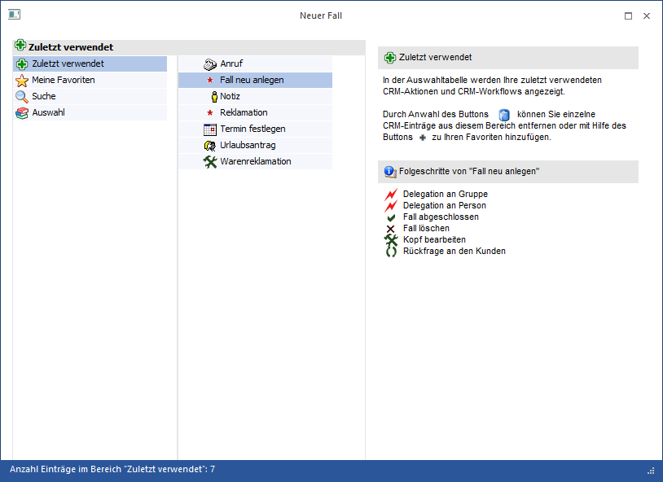
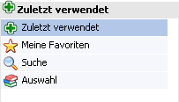
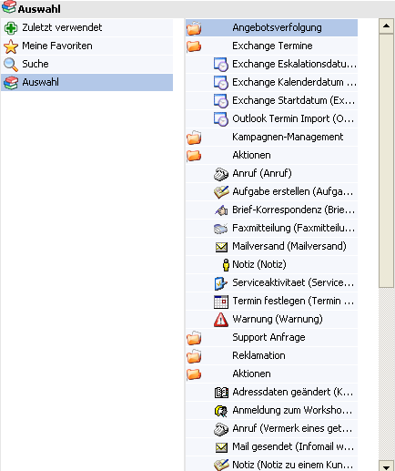
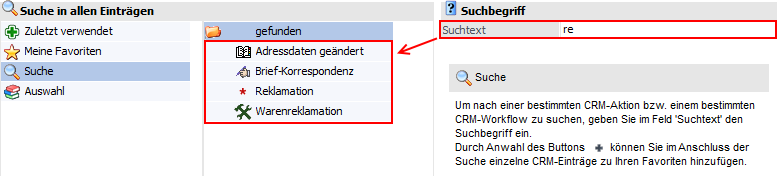
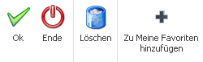

Im Fenster "Neuer Fall", welches über den Menüpunkt
1 CRM
1 Neuer Fall
oder dem CRM-Ribbon (Button "Neuer Fall") aufgerufen werden kann, können neue Workflows gestartet bzw. neue Aktionseinträge erfasst werden.
Achtung
Diese Möglichkeit besteht nur für Benutzer des Typs "CRM Benutzer" oder "CWL und CRM Benutzer"!

Unterteilt ist dieses Fenster in 3 Bereiche, wobei die Auswahlmöglichkeiten in der Auswahl-Tabelle von der Berechtigung des angemeldeten Benutzers abhängig sind:
ü Navigations-Tabelle
ü Auswahl-Tabelle
ü Informationsbereich
Navigations-Tabelle

In der Navigations-Tabelle stehen die folgenden Auswahlen zur Verfügung:
ü Zuletzt verwendet
In diesem
Bereich werden alle zuletzt verwendeten Workflow und Aktionen aufgelistet.
ü Meine Favoriten
In diesem
Bereich werden alle Workflowstartschritte bzw. Aktionsschritte angezeigt, die
mittels Funktion "zu meine Favoriten hinzufügen" als Solche definiert
wurden.
ü Suche
Der Bereich "Suche"
bietet die Möglichkeit mittels Suchtext nach Workflowstartschritte bzw.
Aktionsschritten zu suchen. Dazu kann im Feld "Suchtext" der Suchbegriff
eingegeben und mit ENTER bestätigt werden. Die Suchergebnisse werden in der
Auswahl-Tabelle aufgelistet.
ü Auswahl
Alle
Workflowstartschritte sowie Aktionsschritte, für welche der Benutzer die
entsprechende Berechtigung hat, werden in der Auswahl-Tabelle dargestellt.
Hinweis
Wird in der Auswahl-Tabelle ein Workflowstartpunkt angewählt, so werden im rechten Informationsbereich die möglichen Folgeschritte angezeigt.
Auswahl-Tabelle

Je nach gewähltem Navigationsbereich werden in dieser Tabelle die entsprechenden Workflowstartpunkte bzw. Aktionsschritte angezeigt.
Ø Suche
Im Bereich "Suche" kann nach Einträgen (Namen des Workflowstartpunkts bzw. Aktionsschritte) gesucht werden. Das Suchergebnis wird als "gefunden" dargestellt.

Buttons

Ø Ok
Durch Anwahl des Buttons "Ok", Doppelklick oder der Taste F5 wird der aktive Workflowstartpunkt oder Aktion ausgeführt.
Ø Ende
Durch Anwahl des Buttons "Ende" bzw. der Taste ESC wird das Fenster geschlossen.
Ø Löschen
Mit Hilfe dieses Buttons können Einträge aus dem Bereich "Zuletzt verwendet" oder "Meine Favoriten" entfernt werden.
Ø Zu Meine Favoriten hinzufügen
Bei Anwahl dieses Buttons wird der markierte Workflowstartpunkt oder die markierte Aktion in den Bereich "Meine Favoriten" übernommen.